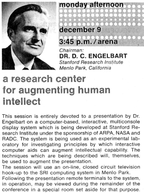

Monday, December 09, 2013 - 10:41 PM
Engelbart did not just 'invent the mouse', he and his team thought up and inspired the entire framework of modern personal computing and then some (for one example, chording devices should become more important with wearables). Everything from the typical desktop to our modern networked experience was demoed that day.
Yet today, all we have is merely a more scaled up and polished version of what was shown that day. And if that's not embarrassing enough, we've polished all the wrong bits. As Bret Victor states in [1]: Engelbart hated our present-day systems. It's because everyone forgot the whole point of what computer (networks) were meant for. They were meant to be a tool - a tool to augment individual but especially collective intelligence - not an end unto itself.
It would be like being given the technology of hydroelectric dams and you using it as the basis of a water park (a really awesome shiny one but still completely missing the original much more powerful intent - as a lever to power much more activities than could be done before). What OS, what device, what editor or browser. Completely, completely besides the point. Plot lost. Shown how to build a Nuclear Fusion device, instead we make a religion over the different possible tools to use and how to build the best magnets or lasers instead of approaching the original vision.
In the same essay [1], Bret states:
The least important question you can ask about Engelbart is, "What did he build?" By asking that question, you put yourself in a position to admire him, to stand in awe of his achievements, to worship him as a hero. But worship isn't useful to anyone. Not you, not him.
The most important question you can ask about Engelbart is, "What world was he trying to create?" By asking that question, you put yourself in a position to create that world yourself
I do stand in awe of Engelbart and Licklider and Vannevar Bush, how much vision and foresight they had. How awesome it would be if technology had developed as they envisioned. But I have also asked myself, what were they trying to create? And I have been inspired to attempt my own answer to that question.
[1] http://worrydream.com/Engelbart/
